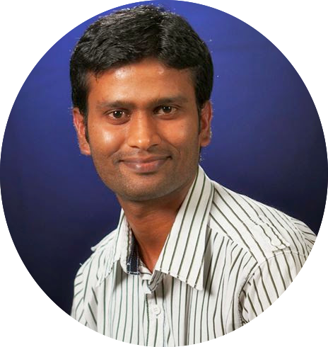

Satheesh Pandian

Summary
I am a hardworking and dedicated individual with 17 years of experience in IT industry
Education
- Bachelor of Technology in Chemical Engineering - Periyar University (1999 - 2003)
- Master of Technology in Bioinformatics - SASTRA to be University (2003 - 2005)
Work Experience
-
Senior Site Reliability Engineer - IDFC First Bank, Bangalore
Oct 2022 - till date
- Release Management
- Monitoring and Observability
- Development - Automation and Infrastructure
- Incident Management
- DevOps - (Terraform and Ansible)
-
Senior Software Engineer - IDFC First Bank, Bangalore
Mar 2022 - Oct 2022
- Performance Optimization
- Performance Tuning
- Building Performance Framework
-
Senior Performance Engineer - Volvo Cars, Bangalore
Jul 2021 - Feb 2022
- Performance Testing
- Capacity Management
-
Performance Architect - IBM India, Bangalore
Mar 2014 - Jun 2021
- System Designing for Capacity
- Performance Testing and Tuning
-
Senior Consultant - Capgemini India, Bangalore
Sep 2013 - Feb 2014
-
Technical Test Lead - Infosys India, Bangalore
Nov 2006 - Jul 2013
Skill Sets
Programming languages
- Python
- Go
- Javascript - React.js, Node.js and express.js
- Shell Scripting
DevOps
- Ansible
- Kubernetes
- Docker
- Terraform
- CICD - GOCD and Jenkis
Performance Tools
- Loadrunner
- K6
- Jmeter
Databases
- MongoDB
- Postgres
- Oracle - Limited proficiency
My Hobbies
Contact Me